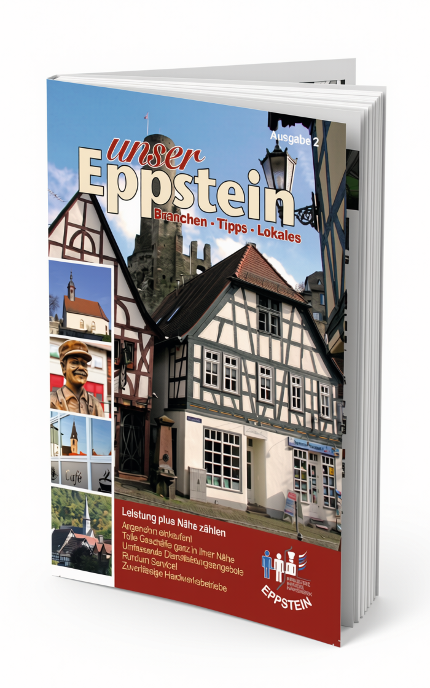
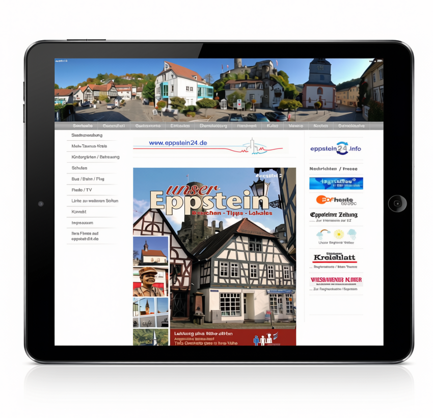
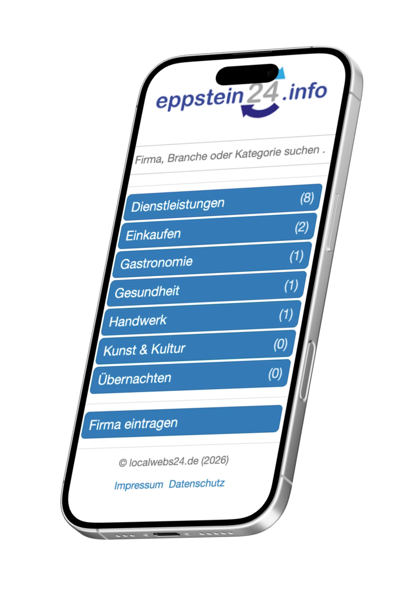

01
Unser Eppstein
Lokale Unternehmen, Informationen und Geschichten als gedrucktes Stadt- und Branchenmagazin.
Unabhängiges Studio seit 2012
Websites, digitale Angebote und Medienprojekte – eigene und im Auftrag.



01
Der Zugang verändert sich. Die Aufgabe bleibt: lokale Informationen sinnvoll ordnen und einfach zugänglich machen.
Lokale Unternehmen, Informationen und Geschichten als gedrucktes Stadt- und Branchenmagazin.
Ein zentraler Einstieg in die lokale Onlinewelt – von Branchen und Vereinen bis zu Nachrichten, Wetter und Radio.
Die ursprüngliche Idee neu gedacht: fokussiert, durchsuchbar und für den schnellen mobilen Zugriff entwickelt.
Projekt besuchen02
Nicht jedes gute Vorhaben passt in eine fertige Kategorie. Deshalb beginnt unsere Arbeit mit der Idee.
01
Websites, Informationsangebote, Verzeichnisse und individuelle Onlineprojekte.
02
Publikationen, redaktionelle Konzepte, Texte und visuelle Kommunikation.
03
Ideen entwickeln, Plattformen aufbauen und Angebote langfristig weiterführen.
03
Lokal verwurzelt. Offen gedacht.
localwebs24.de wurde 2012 in Eppstein gegründet. Seitdem beschäftigen wir uns mit der Frage, wie Informationen sinnvoll geordnet, ansprechend gestaltet und einfach zugänglich gemacht werden können – auf Papier, im Web und auf den Geräten ihrer Zeit.
Unsere Wurzeln sind lokal. Unsere Arbeit ist nicht auf einen Ort oder ein Medium begrenzt.
04
Eine Idee im Kopf?
Vielleicht gibt es schon eine konkrete Aufgabe. Vielleicht zunächst nur eine Idee. Beides ist ein guter Anfang.
localwebs24.de
vertreten durch Thomas Dürrich
Rossertstr. 23
65817 Eppstein
Telefon: (06198) 2588
Telefax: (06198) 2565
E-Mail: post@localwebs24.de
Für Inhalte verlinkter Angebote sind ausschließlich deren Betreiber verantwortlich.
Thomas Dürrich, localwebs24.de
Rossertstr. 23, 65817 Eppstein
E-Mail: post@localwebs24.de
Beim Aufruf dieser Website werden technisch erforderliche Verbindungsdaten verarbeitet. Dazu können IP-Adresse, Zeitpunkt der Anfrage, aufgerufene Adresse, übertragene Datenmenge, Referrer, Browser und Betriebssystem gehören. Die Verarbeitung erfolgt zur sicheren und störungsfreien Bereitstellung der Website auf Grundlage von Art. 6 Abs. 1 lit. f DSGVO.
Die technische Bereitstellung erfolgt über Infrastruktur von Cloudflare. Weitere Informationen finden Sie in der Datenschutzrichtlinie von Cloudflare.
Wenn Sie uns per E-Mail kontaktieren, verarbeiten wir Ihre Angaben zur Bearbeitung der Anfrage und möglicher Anschlussfragen. Rechtsgrundlage ist je nach Inhalt Art. 6 Abs. 1 lit. b oder lit. f DSGVO.
Diese Website setzt keine Analysewerkzeuge, Werbetracker oder nicht technisch erforderlichen Cookies ein. Es werden keine externen Webschriften geladen.
Sie haben nach Maßgabe der gesetzlichen Bestimmungen Rechte auf Auskunft, Berichtigung, Löschung, Einschränkung der Verarbeitung, Datenübertragbarkeit und Widerspruch. Außerdem besteht ein Beschwerderecht bei einer Datenschutz-Aufsichtsbehörde.
Stand: Juli 2026